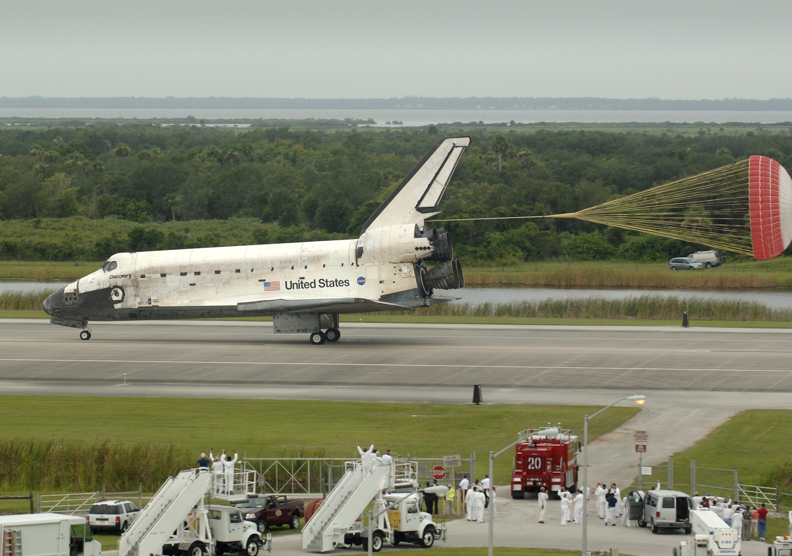
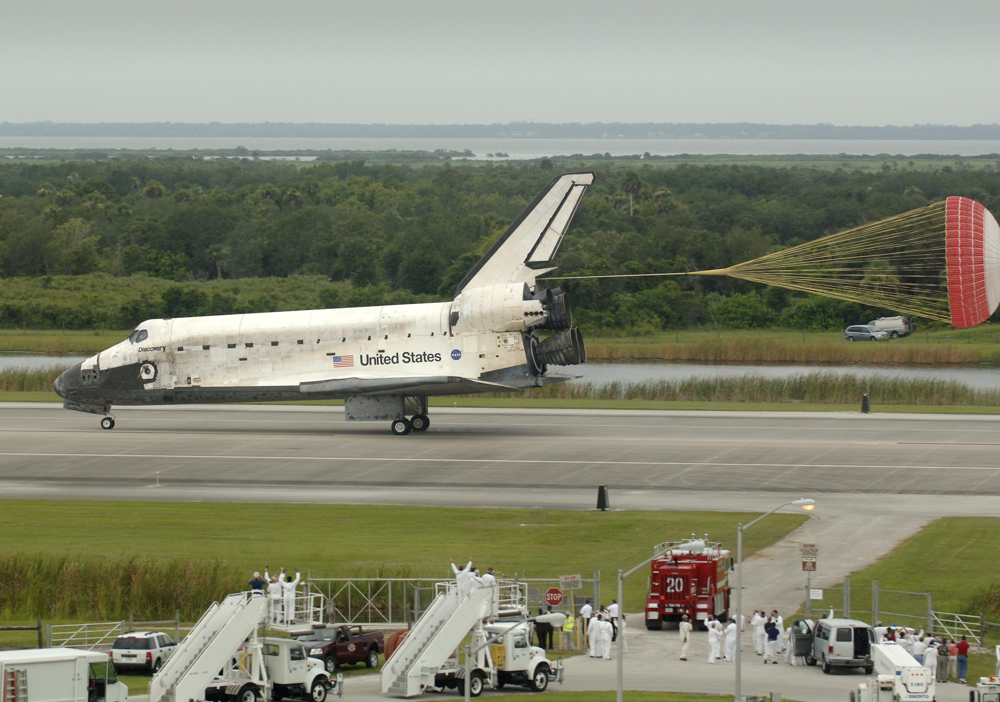

Po sukcesie misji Apollo, zainteresowanie badaniami kosmicznymi nie osłabło. W 1970 roku rozpoczęła się era sond kosmicznych, które badały odległe planety i ich księżyce. Misje takie jak Voyager 1 i Voyager 2, które wystartowały w 1977 roku, dostarczyły nam niezwykle cennych informacji o Układzie Słonecznym.
 

W 1981 roku NASA wprowadziła program wahadłowców, który umożliwił wielokrotne loty w kosmos. Wahadłowce były kluczowe dla budowy Międzynarodowej Stacji Kosmicznej (ISS), która rozpoczęła działalność w 1998 roku.

W ostatnich latach eksploracja Marsa stała się jednym z głównych celów agencji kosmicznych. Sondy takie jak Curiosity, Perseverance i łazik Opportunity dostarczyły dowodów na to, że na Marsie mogło istnieć życie.

Plany kolonizacji Marsa oraz rozwój nowych technologii kosmicznych, takich jak rakiety wielokrotnego użytku SpaceX, są obecnie w centrum zainteresowania eksploracji kosmosu.